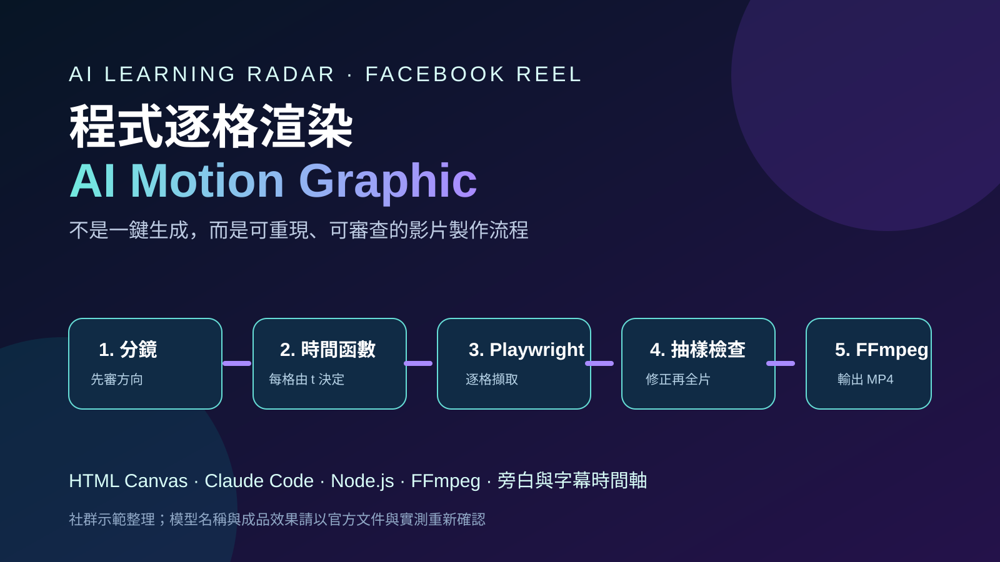

Facebook Reel｜程式逐格渲染的 AI Motion Graphic：把 AI 影片做成可審查的製作流程

一句話摘要
這支 Reel 示範的核心不是「一句話生出影片」，而是把教學動畫拆成分鏡、固定時間函數、逐格 render、抽樣檢查、音訊合成與交付檔案；讓每一個步驟都能被人審查與重做。
來源脈絡與查核邊界
Facebook 分享連結已解析到 Reel ID `1416224930580554`，可讀到作者、貼文正文與示範 Prompt；影片本體仍受 Facebook 登入牆限制，本文不把未看到的畫面當作已驗證事實。
貼文提到「Claude Opus 5.5」。本次可讀取的 Claude Code 官方概覽頁可確認 Claude Code 是官方產品與文件入口，但頁面未出現該精確模型名稱。因此，下列與此名稱相關的能力敘述，均視為作者的示範用法，不視為獨立官方規格確認。
F5-TTS 的公開 GitHub 專案可讀取，支持其作為語音生成／複製研究工具的存在；但實際音質、硬體需求、授權與可使用情境仍應在導入前依上游文件與內容權利另行確認。
貼文提出的製作方法
- 先請 AI 提出六格分鏡，先改方向，後寫程式。
- 將長度、比例、配色、字體、節奏與「每一格只由時間決定」寫進規格。
- 以 HTML Canvas 的 `seek(t)` 建構可重現畫面；用 Playwright 截圖，再交 FFmpeg 組成 MP4。
- 先抽頭、中、尾與轉場畫面，檢查斷行、疊字、元素重疊與節奏，再 render 全片。
- 將旁白文字、字幕、時間表、場景 HTML、render 程式與音訊程式一併交付，保留可修改的來源，而非只交 MP4。
這套做法很接近程式化動態設計：它犧牲「直接生成」的即時感，換取視覺一致性、可重現性與更明確的驗收點。
可直接複製的提示詞
幫我製作一支教學動畫解說影片，主題是「如何用 Claude Opus 5.5 做影片」。用程式逐格渲染成 MP4（HTML Canvas 的 seek(t) + Playwright 截圖 + ffmpeg），並用我的聲音配旁白。
規格：16:9，1920×1080，30 fps，長度跟著旁白走（約 70 秒）。字幕在畫面下方，深色膠囊底、象牙白字；字幕顯示原文，英文與數字照寫。不加背景音樂；旁白音量做 loudnorm（I=-16, TP=-1.5）。
旁白稿共八段：如何用 Claude Opus 5.5 做影片？給我一分鐘，帶你看完整個流程。先搞懂原理：一般 AI 影片工具直接生成畫面；這個流程是先寫一段程式，再由電腦一格一格把影片畫出來。先準備 Claude Code、Node.js、ffmpeg。第一步先給我六格分鏡，確認並修改方向後才動手。第二步清楚交代長度、比例、配色、字體、節奏，並確保每一格畫面只由時間決定。第三步 render 前抽開頭、中間、結尾三格檢查，沒問題再整支輸出。最後：畫面每次不一樣就移除計時器和亂數；若畫面過度相似就自行指定風格；長片失敗先以三秒片段測試。你描述，它寫程式，電腦畫成影片。
配音另存一份稿，只把數字改成中文念法，例如 5.5 改為五點五；英文詞保持英文念法，字幕仍用原稿。若使用自己的語音樣本，僅使用具授權的本人或已取得明確同意者聲音。貼文提議以本機 F5-TTS 與 8 至 12 秒、只有目標說話者的乾淨音檔為範本，並手動校正逐字稿；這些是來源作者建議，導入前仍要檢查模型授權、隱私與品質。
動畫節奏：以「關鍵詞在句中的字元位置 ÷ 句長 × 該句秒數」估算元素進場時間。同組元素的進場差約 0.05 到 0.1 秒；下一段可在上一段退場時開始；主角用快進慢停或彈出，次要資訊快速帶過，重點多停留；字幕按標點切成小句，同一時間只顯示一句。
品質檢查：render 前把各段與轉場時間點的靜態畫面拼成縮圖，檢查文字斷行、字幕疊字、元素重疊與裝飾壓字。最後合成旁白。交付 MP4、scene.html、render.mjs、build_audio.py、clone.py、旁白稿與 timings.js，未使用檔案移到 `To_delete/`，不要直接刪除。
實作時值得補上的安全與品質門檻
- 先從 10 至 15 秒、單一主題的片段驗證，避免長片 render 到最後才發現時間軸或字體問題。
- 讓時間函數可重現：避免未固定的隨機數、真實時鐘與外部即時資料直接驅動畫面。
- 將旁白、字幕與畫面視為三份要核對的資料；數字、英文專有名詞與人名最容易在 ASR 或 TTS 中出錯。
- 以具授權的聲音與素材製作；不得以未取得同意的聲音複製、人物肖像或受保護內容進行公開發布。
- 產生式工具、coding agent 與 TTS 的模型、費用、可用地區與政策都可能變動，正式製作前應重新檢查官方文件與帳戶方案。
原始連結
- Facebook 分享：https://www.facebook.com/share/v/1DhtnJs2HP/
- Facebook Reel：https://www.facebook.com/reel/1416224930580554/
- Claude Code 官方概覽：https://code.claude.com/docs/en/overview
- F5-TTS GitHub：https://github.com/SWivid/F5-TTS